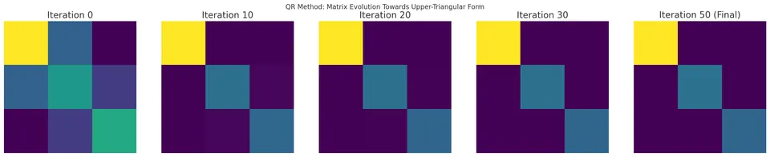

The QR method is a widely used algorithm in numerical linear algebra for determining the eigenvalues of a given square matrix. Unlike direct methods such as solving the characteristic polynomial, which can be complicated and unstable numerically for large matrices, the QR method leverages iterative transformations that preserve eigenvalues. Over repeated iterations, these transformations lead the matrix closer to a quasi-upper-triangular or upper-triangular form, from which the eigenvalues can be read directly.

Consider an $n \times n$ matrix $A$. The QR decomposition (factorization) of $A$ is given by:
$$A = QR$$
where $Q$ is an orthogonal matrix ($Q^T Q = I$) and $R$ is an upper-triangular matrix.
The QR method applies the following iterative scheme:
I. Initialization: Set $A_0 = A$.
II. Iteration: For each iteration $k \geq 1$:
Compute the QR factorization of $A_{k-1}$:
$$A_{k-1} = Q_k R_k.$$
Form a new matrix:
$$A_k = R_k Q_k.$$
Notice that:
$$A_k = R_k Q_k = Q_k^{-1} A_{k-1} Q_k,$$ which means $A_k$ is similar to $A_{k-1}$. Since similarity transformations preserve eigenvalues, all $A_k$ share the same eigenvalues as the original matrix $A$.
As $k$ increases, under certain conditions (e.g., a well-chosen shift strategy), the matrix $A_k$ converges to an upper-triangular matrix (or a quasi-upper-triangular form in the real case), whose diagonal entries are the eigenvalues of $A$.
The idea behind the QR method arises from the following observations:
I. Similarity and Eigenvalues:
Two matrices $A$ and $B$ are similar if there exists an invertible matrix $C$ such that $A = C^{-1} B C$. Similar matrices share the same eigenvalues.
II. QR Decomposition:
Every invertible (or at least full rank) matrix $A$ can be decomposed into an orthogonal matrix $Q$ and an upper-triangular matrix $R$.
III. Iterative Process:
By repeatedly factoring $A_{k-1}$ into $Q_k R_k$ and then forming $A_k = R_k Q_k$, we create a sequence of similar matrices $A_0, A_1, A_2, \ldots$. If $A_k$ converges to an upper-triangular matrix, the eigenvalues are the diagonal elements of that limit.
In practice, to ensure rapid convergence and numerical stability, shifts are employed (the so-called "QR algorithm with shifts"). This modification chooses special shifts based on elements of $A_k$ to speed up convergence to eigenvalues.
I. Initialization: Set $A_0 = A$.
II. QR Factorization: Compute the QR factorization of $A_{k-1}$:
$$A_{k-1} = Q_k R_k.$$
The QR factorization can be computed using:
III. Form New Matrix:
$$A_k = R_k Q_k.$$
Note that:
$$A_k = Q_k^{-1} A_{k-1} Q_k,$$
so $A_k$ and $A_{k-1}$ are similar.
IV. Check for Convergence:
If $A_k$ is sufficiently close to an upper-triangular matrix, or the off-diagonal elements are below a given tolerance, stop.
V. Output:
The diagonal elements of the nearly upper-triangular matrix $A_k$ at convergence approximate the eigenvalues of the original matrix $A$.
Given System:
$$A = \begin{bmatrix}4 & 1 \\ 2 & 3\end{bmatrix}.$$
I. First QR Factorization:
Perform the QR factorization on $A_0 = A$.
Suppose we find:
$$A = Q_1 R_1,$$ with
$$Q_1 = \begin{bmatrix}0.8944 & -0.4472 \\ 0.4472 & 0.8944\end{bmatrix}, \quad R_1 = \begin{bmatrix}4.4721 & 1.7889 \\ 0 & 2.2361\end{bmatrix}.$$
II. Form $A_1$:
$$A_1 = R_1 Q_1.$$
After multiplication, ideally, we move closer to an upper-triangular form. Repeating this process multiple times (depending on the complexity of the matrix) will yield a matrix whose off-diagonal elements approach zero.
III. Convergence:
After sufficient iterations, the matrix $A_k$ will approximate an upper-triangular matrix. The diagonal entries of this matrix give the eigenvalues of $A$.
For this simple $2 \times 2$ matrix, the method would quickly converge. The eigenvalues obtained would match the exact eigenvalues solved by the characteristic equation.
I. All Eigenvalues Simultaneously:
The QR method retrieves all eigenvalues of a matrix at once, rather than computing them individually.
II. Numerical Stability:
With proper implementation (especially using orthogonal transformations and shifts), the QR method is stable and widely considered the "gold standard" for eigenvalue computations in numerical libraries.
III. Broad Applicability:
The QR method works for both real and complex matrices and can be adapted to handle a variety of matrix types efficiently.
I. No Direct Eigenvectors:
The basic QR algorithm finds eigenvalues but does not directly produce eigenvectors. Additional steps or modifications are required to recover eigenvectors.
II. Computational Effort:
Although efficient algorithms exist, the QR method can be computationally intensive for very large matrices. Advanced techniques like the Hessenberg form and modern parallel algorithms are used to improve performance.
III. Convergence Speed for Certain Matrices:
While generally fast, convergence can be slow if the matrix has certain structures or if shifts are not chosen wisely, making it less practical without proper optimization.